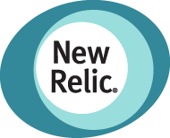
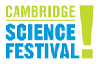
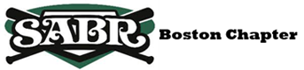
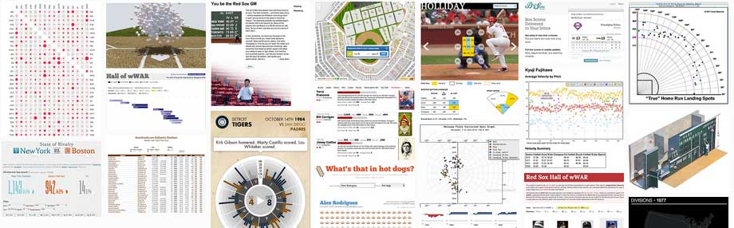

About
Are you a web developer, designer, or a programmer who is interested in baseball? Or a passionate baseball fan with ideas?
Boston Baseball Hack Day on March 30, 2013, is the second annual hacking event where area baseball minds come together, form a team, and collaborate to create baseball-related project and bring an idea to life. The goal of the day is to bring creative minds into one room and see what they can produce within a limited time. The project could be (but is not limited to) a tool, simple web app, website, or data visualization. See what we did in 2012 to get an idea.
It is also a great opportunity to network and socialize among like-minded people. Projects will be judged by area experts, and a brief awards ceremony (with prizes courtesy of our sponsors) will conclude the program.
At the end of the day, projects will be judged by area experts, and a brief awards ceremony will conclude the event.
Baseball Hack Day is a free event thanks to the generosity of our sponsors.
New to hack days? No need to fear. There'll be people of all skill levels and skill sets participating. Get to know them in the forum. And here are some resources to get you prepared.
To be notified when 2014 registration opens (usually around when pitchers and catchers report to the spring training) subscribe to our newsletter.
2013 Recap
Thanks to our generous sponsors, we were able to hold a successful hackathon with 31 enthusiastic participants, and 10 creative projects were submitted by the end of the day.
Here are the grand prize winners:
- How did we get here?
by Simon Mahler and Ian Malott
- Where should i have been born to play MLB
by James Hrisho
Other projects: Baseballscapes, Pitch Tracker, Yank The Pitcher, Grady!, Beer Clap, History of OBP, Tripple Crown, MLB TradeWARz, SublimeBaseballNews (holycow!)
View all the projects by visiting our hackerleague page
As you know, the ultimate goal of the Baseball Hack Day is to create an event where baseball enthusiasts can collaborate and have fun building something new and innovative.
This free event would not have been possible without the generous support from our sponsors: Stattleship, MLB Advanced Media, ESPN Developer Center, thoughtbot, The Boston Globe, and New Relic
I will be gathering additional feedback from the attendees, and planning on organizing an even better event next year!
REGISTRATION FOR 2013 BASEBALL HACK DAY IS ENDED AND THE EVENT IS SOLD OUT.
After you register, please check out our hackerleague.com page (which is how you are going to submit your hack at the end, so you should create an account there to save time) and post on our forum to find a team, and see (and edit) our google doc for ideas/inspirations.
Our distinguished panel of judges:
- David Thyresson
- David is the founder of Stattleship, a Boston-based startup that makes apps that make stats fun. He is also the developer of Fanboat, your social boxscore for the iPhone. When not handcrafting apps to make stats look good, you can find David in Loge 5 of the TD Garden during Bruins games just outside of TV camera range. You can follow him: @stattleship or @fanboatapp or his linkedin profile
- Kyle Glossy
- Kyle works for MLB Advanced Media (aka, mlb.com) as a software engineer. A member of the Front End development team since 2010, this year marks Kyle's 4th year helping to bring live baseball games to the web via MLB.TV's browser-based Media Player. Prior to working for MLBAM, Kyle worked at Macromedia & Adobe, where he helped bring Sunday Night Football to the web via the SNF Extra app. Long before that, Kyle spent way too many hours playing Earl Weaver Baseball, Hardball!, and Baseball Stars. A huge Red Sox fan, Kyle spent his college days hawking hot dogs and crackerjacks as a vendor at Fenway (note: the Citgo sign's location atop the BU bookstore may have influenced his college decision) and counts sitting in the stands for Game 4 of the 2004 ALCS as a birthday celebration that is pretty hard to beat.
- Will Merydith
- Will is the Principal Developer Advocate for ESPN’s Developer Center, which provides developers with access to ESPN sports data via several APIs. Prior to joining ESPN, Will has worked in the roles of software developer, product manager and entrepreneur, and has developed and/or managed mobile and web application releases for Amazon Web Services, Disney.com, ABCNews.com, Movies.com, ESPN.com, Linkin Park, Green Day, and Star Trek. Will continues to work on his coping skills as a Mariners fan. Follow him on twitter: @wmerydith
SCHEDULE
- 9:30-10:00
- Registration, meet and greet, and coffee.
- 10:00-10:30
- Welcome, introductions, and pitch.
- 10:30-6:00
- Code! (Lunch will be served -- sponsored by Stattleship)
- 6:00-7:00
- Presentation, judging and awards.
- *7:30
- optional beer social -- location to be decided later.
You need to bring a lap top computer, power strip and your ideas and skills. Join our on line forum where you can exchange ideas and recruit team members.
SPONSORS
Our heartfelt thanks to our sponsors. Without them, this free event will not be possible!
Stattleship (Sponsoring our lunch)
MLB Advanced Media (Sponsoring prizes)
ESPN Developer Center (Sponsoring prizes)
thoughtbot (Providing space)
The Boston Globe (Sponsoring breakfast)- 
New Relic
In partnership with...
- 
Cambridge Science Festival
Hacks/Hackers Boston- 
Society of American Baseball Research Boston Chapter
Support the event!
Have something you'd like to contribute to the hack day? Were looking for data sources, sponsorship, volunteering and wed love to hear from you. Email Daigo Fujiwara: daigo@daigofujiwara.com
THE VENUE
View Larger Map
thoughtbot
41 Winter St, 8th floor,Boston Ma 02108
View in google map
thoughtbot's event page
List of nearby parking lots
You may find area parking in sites like parkopedia or bestparking. Boston Common Garage has a flat rate of $12 on Saturday..
By MBTA
thoughtbot office is right in the heart of Boston. You can take Red Line or Green Line to Park Street, or Red, Orange or Silver line to Downtown Crossing. thoughtbot office is at 41 Winter Street.
RESOURCES
We've started a new a public Google doc for 2013 (old one is here), collecting APIs, tools and data sources. Be sure to add your favorites!
 https://docs.google.com/document/d/1sYJfPtEf9YGQmtpTojw-L-TZnMYnN1Gi-S_5WtYY-mk/edit
https://docs.google.com/document/d/1sYJfPtEf9YGQmtpTojw-L-TZnMYnN1Gi-S_5WtYY-mk/edit
...or shortened as: http://j.mp/2013bbhack
We have also started a forum that you canparticipate in. Ask your question on our forum.
INSPIRATIONS
Introducing: Baseball Hack Day Inspirations Tumblr!
http://baseballhackday.tumblr.com

Check it out and submit your inspirations to Daigo
REGISTRATION
2013 Registation is now ended, and we are sold out. Thank you.
To be notified when the 2014 registration opens (usually around when pitchers and catchers report to the spring training) subscribe to our newsletter.
FORUM
Discussion forum powered by Disqus. Because we have "one-day" format, some find it hard to pair up, flesh out new concept, and execute in that span. This is our social forum so people could say if you are part of a team or not before the event, and connect people to talk and prep if they aren't part of a team. Remember, your ideas need to be compact and succinct. Have fun!
History
Baseball Hack Day was born out of a Boston area news & geek meetup group Hacks/Hackers and Society of American Baseball Research Boston Chapter after watching terrible collapse of 2011 Red Sox season. Our first event was held at The Boston Globe on March 24, 2012.
Our inaugural event was a success, and 35 hackers participated. Read the recap of the event from Boston.com by Matt Pepin: "Clever concepts created at Boston Baseball Hack Day" and on Beta.Boston.com: "Baseball Hack Day Recap".
Projects: Rally Cry (2012 winner), Red Sox Wall of wWar, What's that in hot dogs?, Fan Cheer, baseballliterature.com, Baseball Scrap Book, State of Rivalry. See more on 2012 page.